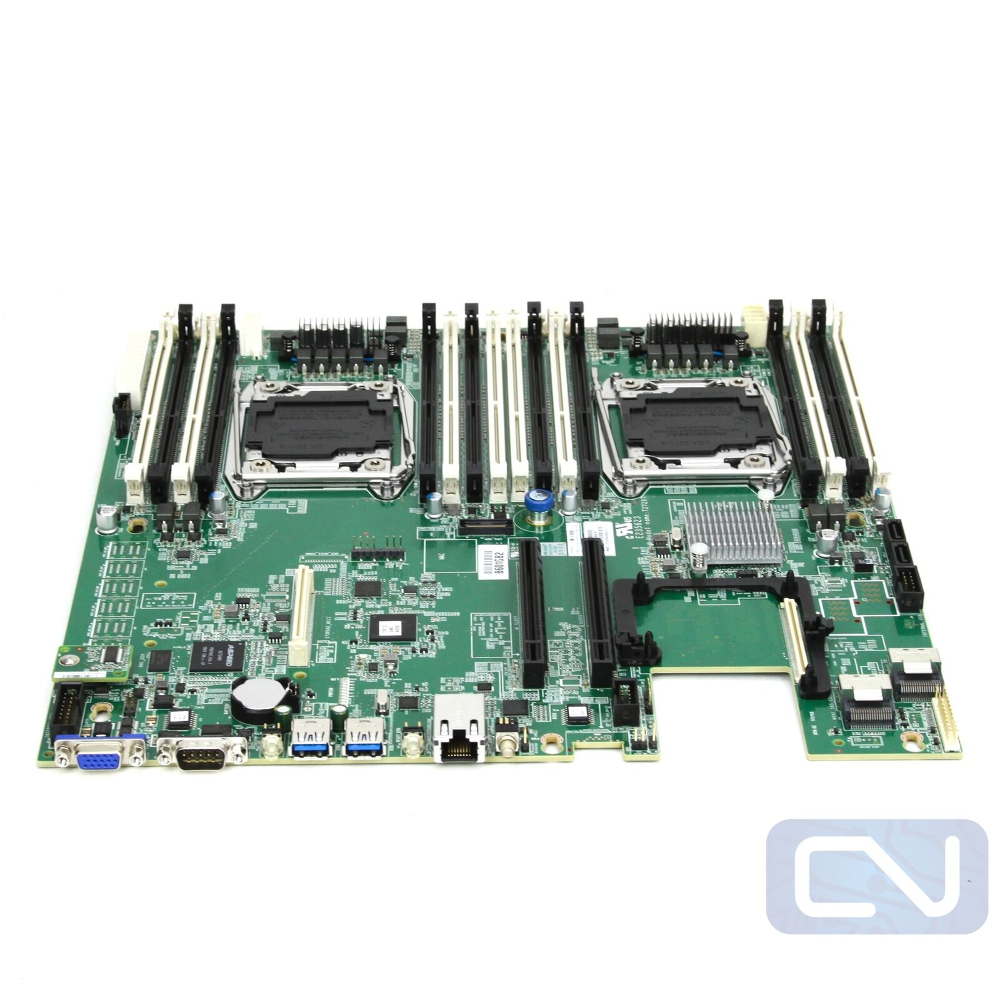

船来啦~船来啦~垃圾佬们纷纷涌到窗前，盼望着大船靠岸的那一刻😢。
LGA3647(C621)大船靠岸可能只是时间问题。在能用上便宜大碗的C621、EYPC 7002/7003之前，还是先看看近处已靠岸的C612吧家人们()。
然而，DDR4 RECC也涨飞了，面对咫尺的众多正规军双路C612主板，比如浪潮5212M4、超微X10DRi、联想RD450X……，只能望洋兴叹。
还好25年初一口气买了8根16GB DDR3 RECC，按理来讲，所有正规军C612，包括御三家（华硕、微星、技嘉，这三家的正规军质量没得说，但现在能买到的很多都是二修的了，个人卖家挺少，且远贵于大船靠岸后的服务器厂商的主板）以及服务器厂商的主板均使用的是DDR4服务器条子，但是在众多正规军双路主板中有一块妖板：英业达代工的X99，支持DDR3内存。

代替方案是一块精粤的双路寨板，寨板就寨板吧，只有供电、散热能顶住就行，不过只有八根槽，技术客服表示全是主通道，一共八通道 ，等会上机测试一下。
后续V100也到货了，原生接口是SXM2，使用转接板改为PCIE接口。可能是转接的缘故，进入Linux会遇到LaneErrStat: LaneErr at lane: 13报错，需要加入内核启动参数pcie_aspm=off才能成功进入Linux，Windows则不用管。
Rocky 9 使用 BLS 启动条目，最适合用 grubby，不推荐手工反复编辑 GRUB 文件，所以进入系统后，永久添加到所有已安装内核：
1 sudo grubby --update-kernel=ALL --args="pcie_aspm=off"
BIOS里已关闭安全启动，接下来安装闭源驱动的依赖：
1 sudo dnf install -y dnf-plugins-core
1 sudo dnf config-manager --set-enabled crb
1 sudo dnf install -y epel-release
1 2 3 4 5 6 sudo dnf install -y \ kernel-devel-matched \ kernel-headers \ gcc \ make \ dkms
禁用开源驱动：
1 sudo tee /etc/modprobe.d/blacklist-nouveau.conf >/dev/null <<'EOF' blacklist nouveau options nouveau modeset=0 EOF
添加官方源（目前Rocky9有源，Rocky10似乎没源）：
1 sudo dnf config-manager --add-repo \ https://developer.download.nvidia.com/compute/cuda/repos/rhel9/x86_64/cuda-rhel9.repo
1 sudo dnf clean expire-cache
选择 R580 闭源 DKMS 分支：
1 2 3 sudo dnf module reset -y nvidia-driversudo dnf module enable -y nvidia-driver:580-dkmssudo dnf install -y cuda-drivers
cuda-drivers只是驱动原包，不是CUDA-tookit。
接下来重启后应当就能正常使用nvidia-smi命令：
1 2 3 4 5 6 7 8 9 10 11 12 13 14 15 16 17 18 19 20 21 (storm) [storm@192 ~]$ nvidia-smi Sat Jul 18 14:43:31 2026 +-----------------------------------------------------------------------------------------+ | NVIDIA-SMI 580.173.02 Driver Version: 580.173.02 CUDA Version: 13.0 | +-----------------------------------------+------------------------+----------------------+ | GPU Name Persistence-M | Bus-Id Disp.A | Volatile Uncorr. ECC | | Fan Temp Perf Pwr:Usage/Cap | Memory-Usage | GPU-Util Compute M. | | | | MIG M. | |=========================================+========================+======================| | 0 Tesla V100-SXM2-16GB Off | 00000000:04:00.0 Off | 0 | | N/A 34C P0 27W / 300W | 0MiB / 16384MiB | 0% Default | | | | N/A | +-----------------------------------------+------------------------+----------------------+ +-----------------------------------------------------------------------------------------+ | Processes: | | GPU GI CI PID Type Process name GPU Memory | | ID ID Usage | |=========================================================================================| | No running processes found | +-----------------------------------------------------------------------------------------+
查看发现没有ECC报错：
1 2 3 4 5 6 7 8 9 10 11 12 13 14 15 16 17 18 19 20 21 22 23 24 25 26 27 28 29 30 31 32 33 34 35 36 37 38 39 40 41 42 43 44 45 46 47 48 49 50 51 52 53 54 55 56 57 58 59 60 (storm) [storm@192 ~]$ mkdir -p ~/v100-check (storm) [storm@192 ~]$ nvidia-smi -q > ~/v100-check/00-before-nvidia-smi-q.txt (storm) [storm@192 ~]$ nvidia-smi -q -d ECC,PAGE_RETIREMENT,MEMORY,PCI,POWER,TEMPERATURE \ > ~/v100-check/01-before-health.txt (storm) [storm@192 ~]$ nvidia-smi -q -d ECC,PAGE_RETIREMENT ==============NVSMI LOG============== Timestamp : Sat Jul 18 14:44:52 2026 Driver Version : 580.173.02 CUDA Version : 13.0 Attached GPUs : 1 GPU 00000000:04:00.0 ECC Mode Current : Enabled Pending : Enabled ECC Errors Volatile Single Bit Device Memory : 0 Register File : 0 L1 Cache : 0 L2 Cache : 0 Texture Memory : N/A Texture Shared : N/A CBU : N/A Total : 0 Double Bit Device Memory : 0 Register File : 0 L1 Cache : 0 L2 Cache : 0 Texture Memory : N/A Texture Shared : N/A CBU : 0 Total : 0 Aggregate Single Bit Device Memory : 0 Register File : 0 L1 Cache : 0 L2 Cache : 0 Texture Memory : N/A Texture Shared : N/A CBU : N/A Total : 0 Double Bit Device Memory : 0 Register File : 0 L1 Cache : 0 L2 Cache : 0 Texture Memory : N/A Texture Shared : N/A CBU : 0 Total : 0 Retired Pages Single Bit ECC : 0 Double Bit ECC : 0 Pending Page Blacklist : No
接下来安装NVIDIA 官方的数据中心 GPU 健康检查、诊断和压力测试工具DCGM。
1 2 3 sudo dnf install -y \ --setopt =install_weak_deps=True \ datacenter-gpu-manager-4-cuda12
设置开机启动：
1 sudo systemctl enable --now nvidia-dcgm
接下来可以开始测试卡了，先快速测试：
1 2 3 4 5 6 7 8 9 10 11 12 13 (storm) [storm@192 ~]$ sudo dcgmi diag -r 1 Successfully ran diagnostic for group. +---------------------------+------------------------------------------------+ | Diagnostic | Result | +===========================+================================================+ |----- Metadata ----------+------------------------------------------------| | DCGM Version | 4.6.0 | | Driver Version Detected | 580.173.02 | | GPU Device IDs Detected | 1db1 | |----- Deployment --------+------------------------------------------------| | software | Pass | | | GPU0: Pass | +---------------------------+------------------------------------------------+
接着进行综合测试，包含持续矩阵运算、功耗负载等测试，适合初步验证稳定性。
300W满载，风扇声音明显，58°C轻松压住，顺利通过测试。
1 2 3 4 5 6 7 8 9 10 11 12 13 14 15 16 17 18 19 20 21 22 23 24 25 26 27 28 29 30 (storm) [storm@192 ~]$ sudo dcgmi diag -r 3 Successfully ran diagnostic for group. +---------------------------+------------------------------------------------+ | Diagnostic | Result | +===========================+================================================+ |----- Metadata ----------+------------------------------------------------| | DCGM Version | 4.6.0 | | Driver Version Detected | 580.173.02 | | GPU Device IDs Detected | 1db1 | |----- Deployment --------+------------------------------------------------| | software | Pass | | | GPU0: Pass | +----- Hardware ----------+------------------------------------------------+ | memory | Pass | | | GPU0: Pass | | diagnostic | Pass | | | GPU0: Pass | | nvbandwidth | Skip | | | GPU0: Skip | +----- Integration -------+------------------------------------------------+ | pcie | Pass | | | GPU0: Pass | +----- Stress ------------+------------------------------------------------+ | memory_bandwidth | Pass | | | GPU0: Pass | | targeted_stress | Pass | | | GPU0: Pass | | targeted_power | Pass | | | GPU0: Pass | +---------------------------+------------------------------------------------+
测试PCIe：
1 sudo dcgmi diag -r pcie --iterations 3
测试显存：
1 2 sudo dcgmi diag -r memory \ -p "memory.is_allowed=True"
测试PCIe/显存带宽：
1 sudo dcgmi diag -r nvbandwidth
最后进行level-4测试，这个测试耗时稍长：
1 2 3 4 5 6 7 8 9 10 11 12 13 14 15 16 17 18 19 20 21 22 23 24 25 26 27 28 29 30 31 32 33 34 (storm) [storm@192 ~]$ sudo dcgmi diag -r 4 Successfully ran diagnostic for group. +---------------------------+------------------------------------------------+ | Diagnostic | Result | +===========================+================================================+ |----- Metadata ----------+------------------------------------------------| | DCGM Version | 4.6.0 | | Driver Version Detected | 580.173.02 | | GPU Device IDs Detected | 1db1 | |----- Deployment --------+------------------------------------------------| | software | Pass | | | GPU0: Pass | +----- Hardware ----------+------------------------------------------------+ | memory | Pass | | | GPU0: Pass | | diagnostic | Pass | | | GPU0: Pass | | nvbandwidth | Skip | | | GPU0: Skip | | pulse_test | Skip | | | GPU0: Skip | +----- Integration -------+------------------------------------------------+ | pcie | Pass | | | GPU0: Pass | +----- Stress ------------+------------------------------------------------+ | memtest | Pass | | | GPU0: Pass | | memory_bandwidth | Pass | | | GPU0: Pass | | targeted_stress | Pass | | | GPU0: Pass | | targeted_power | Pass | | | GPU0: Pass | +---------------------------+------------------------------------------------+
最终安全下车，测试通过
接下来编译GPU版本的VASP，需要安装 NVIDIA HPC SDK，安装官网的说明，从源安装就行，安装完成之后能顺利找到相应的编译器，然后使用module进行管理：
1 2 3 4 5 6 7 8 9 10 11 12 13 14 15 16 17 18 19 20 21 22 23 24 25 26 27 28 29 30 31 32 33 34 35 36 37 38 39 40 41 42 43 44 45 46 47 48 49 50 51 52 53 54 55 56 57 58 59 60 61 62 63 64 65 66 67 68 69 70 71 72 73 74 75 76 77 (storm) [storm@192 ~]$ ls /opt/nvidia/hpc_sdk/modulefiles/ nvhpc nvhpc-hpcx nvhpc-hpcx-cuda12 nvhpc-hpcx-cuda12-openmpi5 nvhpc-hpcx-cuda13-openmpi4 nvhpc-nompi nvhpc-byo-compiler nvhpc-hpcx-2.20-cuda12 nvhpc-hpcx-cuda12-openmpi4 nvhpc-hpcx-cuda13 nvhpc-hpcx-cuda13-openmpi5 (storm) [storm@192 ~]$ export MODULEPATH=/opt/nvidia/hpc_sdk/modulefiles:$MODULEPATH (storm) [storm@192 ~]$ module avail ------------------------------------------------------ /opt/nvidia/hpc_sdk/modulefiles ------------------------------------------------------- nvhpc-byo-compiler/26.5 nvhpc-hpcx-cuda12-openmpi5/26.5 nvhpc-hpcx-cuda13-openmpi5/26.5 nvhpc-nompi/26.5 nvhpc-hpcx-2.20-cuda12/26.5 nvhpc-hpcx-cuda12/26.5 nvhpc-hpcx-cuda13/26.5 nvhpc/26.5 nvhpc-hpcx-cuda12-openmpi4/26.5 nvhpc-hpcx-cuda13-openmpi4/26.5 nvhpc-hpcx/26.5 ---------------------------------------------------------- /home/storm/modulefiles ----------------------------------------------------------- cp2k/2026.1 orca/6.1.1 vasp/6.6.0 ------------------------------------------------------- /usr/share/Modules/modulefiles ------------------------------------------------------- dot module-git module-info modules null use.own Key: modulepath (storm) [storm@192 ~]$ module load nvhpc (storm) [storm@192 ~]$ which nvfortran nvc nvc++ nvcc mpif90 mpirun /opt/nvidia/hpc_sdk/Linux_x86_64/26.5/compilers/bin/nvfortran /opt/nvidia/hpc_sdk/Linux_x86_64/26.5/compilers/bin/nvc /opt/nvidia/hpc_sdk/Linux_x86_64/26.5/compilers/bin/nvc++ /opt/nvidia/hpc_sdk/Linux_x86_64/26.5/compilers/bin/nvcc /opt/nvidia/hpc_sdk/Linux_x86_64/26.5/comm_libs/mpi/bin/mpif90 /opt/nvidia/hpc_sdk/Linux_x86_64/26.5/comm_libs/mpi/bin/mpirun (storm) [storm@192 ~]$ nvfortran --version nvfortran 26.5-0 64-bit target on x86-64 Linux -tp haswell NVIDIA Compilers and Tools Copyright (c) 2026, NVIDIA CORPORATION & AFFILIATES. All rights reserved. (storm) [storm@192 ~]$ nvcc --version nvcc: NVIDIA (R) Cuda compiler driver Copyright (c) 2005-2026 NVIDIA Corporation Built on Thu_Mar_19_11:12:51_PM_PDT_2026 Cuda compilation tools, release 13.2, V13.2.78 Build cuda_13.2.r13.2/compiler.37668154_0 (storm) [storm@192 ~]$ nvaccelinfo CUDA Driver Version: 13000 NVRM version: NVIDIA UNIX x86_64 Kernel Module 580.173.02 Tue Jun 23 08:38:17 UTC 2026 Device Number: 0 Device Name: Tesla V100-SXM2-16GB Device Revision Number: 7.0 Global Memory Size: 16928342016 Number of Multiprocessors: 80 Concurrent Copy and Execution: Yes Total Constant Memory: 65536 Total Shared Memory per Block: 49152 Registers per Block: 65536 Warp Size: 32 Maximum Threads per Block: 1024 Maximum Block Dimensions: 1024, 1024, 64 Maximum Grid Dimensions: 2147483647 x 65535 x 65535 Maximum Memory Pitch: 2147483647B Texture Alignment: 512B Clock Rate: 1530 MHz Execution Timeout: No Integrated Device: No Can Map Host Memory: Yes Compute Mode: default Concurrent Kernels: Yes ECC Enabled: Yes Memory Clock Rate: 877 MHz Memory Bus Width: 4096 bits L2 Cache Size: 6291456 bytes Max Threads Per SMP: 2048 Async Engines: 2 Unified Addressing: Yes Managed Memory: Yes Concurrent Managed Memory: Yes Preemption Supported: Yes Cooperative Launch: Yes Unified Memory: No Memory Models Flags: -gpu=mem:separate, -gpu=mem:managed Default Target: cc70
使用makefile.include.nvhpc_omp_acc模板，只为V100编译就行，模板内容修改为：
1 GPU = -gpu=cc70,cuda12.9
然后安装Rocky的FFTW开发包：
1 sudo dnf install -y fftw-devel
确认文件：
1 2 3 4 5 (storm) [storm@192 vasp.6.6.0]$ rpm -ql fftw-devel | grep -E 'fftw3\.h|libfftw3(_omp)?\.so' /usr/include/fftw3.h /usr/lib64/libfftw3.so /usr/lib64/libfftw3_omp.so
相应的修改模板中库的位置：
1 2 LLIBS += -L/usr/lib64 -lfftw3 -lfftw3_omp INCS += -I/usr/include
把原来的：
1 2 3 FFTW_ROOT ?= /path/to/your/fftw/installation LLIBS += -L$(FFTW_ROOT)/lib -lfftw3 -lfftw3_omp INCS += -I$(FFTW_ROOT)/include
注释掉，避免错误指向 /usr/lib。
一次性编译通过，接下来使用make test命令进行测试，使用1个MPI进程，8个OpenMP线程：
1 2 3 4 5 Total test time : 126 min, 38 sec ================================================================== SUCCESS: ALL SELECTED TESTS PASSED ================================================================== make[1]: 离开目录“/opt/apps/vasp.6.6.0/testsuite”
最终耗时约2h，全部测试通过